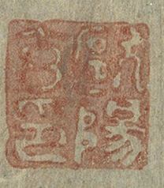

欧阳玄印 “Ouyang Xuan Yin”
“Seal of Ouyang Xuan”

Historical Background: The Seal’s Origin
The seal reading “欧阳玄印” (Ouyang Xuan Yin), meaning the Seal of Ouyang Xuan, belongs to one of the most distinguished scholar-officials of the mid-to-late Yuan dynasty. Ouyang Xuan (1283–1357) was known for his literary writings and his position as a Hanlin Scholar and Director of Education. He rose through the Yuan bureaucracy to become a pivotal figure in the imperial Hanlin Academy, the institution responsible for composing imperial edicts, compiling dynastic histories, and managing the literary culture of the court.
Within the Kuizhang Pavilion and Xuanwen Pavilion—the cultural institutions established by Emperor Wenzong to attract literary talent—Ouyang Xuan was known for his exceptional mastery of poetry and prose. He belonged to the same rarefied circle of Han Chinese literati who served the Mongol court while maintaining the highest standards of classical learning—a generation that included Zhao Mengfu’s direct contemporaries and admirers, and which defined the cultural character of mid-Yuan court life.
Critically, in the 5th year of the Zhizheng reign (1345), the Yuan Emperor ordered the construction of a spirit-path stele for Zhao Mengfu, and it was Ouyang Xuan who was commanded to compose the commemorative text, which was the highest honor of literary memorialization that the dynasty could bestow. Ouyang Xuan was, in a formal and imperial sense, the man whom the Yuan state chose to define Zhao Mengfu’s legacy for posterity. His seal on this scroll brings those two relationships—the living patron and the posthumous commemorator—into direct material contact.
The Seal’s Unique Position on the Scroll
The seal of Ouyang Xuan appears in the lower left corner of the painting. Unlike the other Yuan-era figures associated with the scroll, he left no colophon, which stands as the period’s only concrete indication of who may have held the painting. This restraint is deeply significant in its Yuan context. Yuan dynasty connoisseurs generally did not favor stamping seals on paintings to assert ownership; they were far more interested in the enduring art of calligraphy and colophons. Against this backdrop, Ouyang Xuan’s decision to leave only a seal is an act of exceptional aesthetic discretion. A man famous for his literary output chose to be present on this scroll solely through a stamp. It suggests either a deep reverence for the work that he felt words could not improve upon, or a deliberate choice to mark presence without performance.
Cultural and Artistic Significance
A Link in the Yuan Literati Chain
Ouyang Xuan’s seal connects Autumn Colors> to the innermost circle of Yuan literary culture. He was a generational peer and intellectual successor to figures directly associated with the scroll’s early history—Zhao Mengfu himself, Yu Ji (who wrote the famous colophon on the painting), and Fan Peng (who added a colophon and his own seal). Ouyang Xuan himself wrote that the “Yuan Four Poets”—Yu Ji, Yang Zai, Fan Peng, and Jie Xisi—represented the supreme flourishing of literary culture in the Yuan dynasty. As a slightly younger member of this same Hanlin milieu, his presence on the scroll through this seal places it within the continuous hands of the very literary community that produced and most deeply understood Yuan literati painting.
The Commemorator of Zhao Mengfu as a Holder of His Work
The relationship between Ouyang Xuan and Zhao Mengfu adds an unusually charged dimension to this otherwise understated seal. Ouyang Xuan left a detailed and admiring assessment of Zhao Mengfu’s multifaceted genius, writing that Zhao’s calligraphy in all forms—seal script, clerical, small regular, running, and cursive—could be ranked alongside the ancients, and that his painting entered the domain of the transcendent. Here, then, is the author of Zhao Mengfu’s official epitaph pressing his seal onto a painting that Zhao made at the peak of his creative life. The seal is not merely a mark of ownership; it is a mark of custodianship by the person who bore perhaps the deepest official responsibility for preserving Zhao’s reputation.
A Rare Survival of Pre-Ming Yuan Provenance
For art historians, the “Ouyang Xuan Yin” seal carries exceptional documentary value. The Yuan period of the scroll’s provenance is extremely sparsely documented—precisely because, as noted above, Yuan literati preferred colophons to seals, and the chain of transmission between Zhao Mengfu’s original gift to Zhou Mi in 1295 and the painting’s documented Ming-era owners is almost entirely undocumented. Ouyang Xuan’s seal is one of the very few physical traces from this approximately 150-year interval that places the painting in an identifiable pair of hands.
Political Significance
A Jiangxi Southerner at the Heart of Mongol Power
Ouyang Xuan’s biography encodes one of the central tensions of Yuan-era intellectual life. He passed the imperial examinations in the second year of the Yanyou era (1315)—the first examination held after a suspension of forty-one years—and was awarded his jinshi degree, subsequently appointed to office in Yuezhou. The restoration of the examination system under Emperor Renzong was a watershed moment for Han Chinese literati who had been systematically excluded from official advancement since the Mongol conquest. Ouyang Xuan’s examination success placed him at the leading edge of a generation of Han scholars who used the reinstated meritocratic system to recover cultural and institutional authority within a court that was structurally dominated by Mongol and Semu elites.
The Epitaph Writer’s Custodianship
Zhao Mengfu’s life had been defined by the moral paradox of serving a conquering dynasty—he was a Song imperial descendant who accepted Yuan office, and he carried the weight of that choice until his death. Ouyang Xuan, commissioned to write his spirit-path stele, was the man who resolved that paradox publicly and officially—who declared, on behalf of the state, that Zhao’s service had been honorable and his genius transcendent. The painting that Zhao made at the moment of leaving office, which encoded his ambivalence about power and his longing for the landscapes of his service years, came to rest—at least for a time—with the man who gave him his posthumous name.